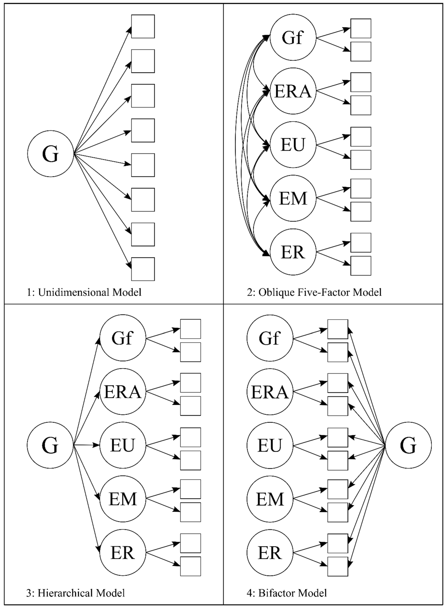
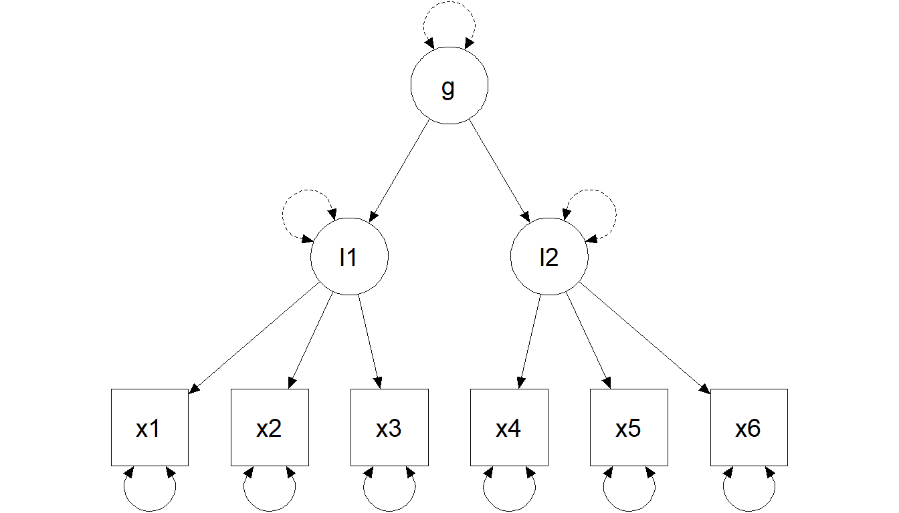

When we draw () (()) from latent to observed, we assume reflective latent variables:
ARROWS are ARROWS: the construct affects responses
“realist” interpretation: the latent variable is something that exists (at least as a stable attribute)
observed scores = construct signal + measurement error
Pragmatic “just a summary” interpretations are not neutral: they imply different measurement models (PCA/EGA/…).
The implied covariance (the single most important equation)
For a standard CFA with latent covariance () and residual covariance ():
\[
\Sigma = \Lambda \Phi \Lambda' + \Theta
\]
This is why:
loadings (()) and factor correlations (()) jointly shape observed covariances
correlated residuals (off-diagonal ()) are extra covariance not explained by factors
Matrices (your original visual slide)
Lambda: matrix of loadings
Phi: latent variance-covariance matrix
Theta: residual variance-covariance matrix
CFA “model families” you will see a lot
Key design choices:
one factor vs multiple factors
are factors correlated?
orthogonal vs oblique
hierarchical / second-order?
bifactor structure?
All have statistical and theoretical consequences.

A quick visual tour: common CFA structures
One-factor model
Two-factor model (correlated factors)
Two-factor model (orthogonal factors)
Hierarchical model (second-order factor)

In R (lavaan grammar for CFA)
Core operator:
=~ defines a factor from its indicators
m <-' F1 =~ y1 + y2 + y3 F2 =~ y4 + y5 + y6 F1 ~~ F2 # factor covariance (oblique)'fit <-cfa(m, data = dat) # or sem(m, data = dat)summary(fit, standardized =TRUE, fit.measures =TRUE)
Constraints (scaling) — your original slide
To estimate latent-variable models, you must scale each factor. Two common strategies:
Standardize latent variables: fix factor means to 0 and factor variances to 1 (std.lv = TRUE).
Marker method: set one loading (()) per factor to 1 (lavaan default).
fit <-cfa(m, data = dat, std.lv =TRUE)
Constraints explained (marker vs standardization)
\[
\Sigma = \Lambda\Phi\Lambda' + \Theta
\]
Marker method (fix one loading to 1)
Standardization (fix factor variance to 1)
(Scaling changes the metric of unstandardized loadings, not the implied covariance model.)
Identification rules (your original framing)
For CFA, common identification rules include:
the t-rule
the Three-Indicator Rule
the Two-Indicator Rule
The t-rule
Necessary but not sufficient:
\[
t \leq \frac{q(q+1)}{2}
\]
where (t) is the number of free parameters and (q) the number of observed variables.
Intuition: the number of nonredundant elements in (S) is the maximum number of “equations”; if unknowns exceed equations, identification is impossible.
The Three-Indicator Rule
A sufficient (not necessary) condition (with diagonal ()):
One-factor model: at least three indicators with nonzero loadings.
Multifactor model is identified if:
≥ 3 indicators per factor
each row of () has one and only one nonzero element (simple structure)
() is diagonal
The Two-Indicator Rule
A sufficient (not necessary) condition for models with >1 factor:
() diagonal
each factor scaled (one () fixed to 1, or std.lv=TRUE)
plus:
≥ 2 indicators per factor
each row of (): one nonzero element
() diagonal
each row of () has at least one nonzero off-diagonal element
CFA evaluation (where deck 03 plugs in)
Global indices are the same as in deck 03 (χ², CFI/TLI, RMSEA+CI, SRMR).
What becomes CFA-specific is local misfit interpretation:
big residual correlations → local dependence / method effects / cross-loadings
MI/EPC candidates typically propose:
cross-loadings (theory-threatening)
correlated residuals (requires a clear justification)
Bifactor: interpretation requires diagnostics (not just fit)
Bifactor often improves fit by absorbing residual covariance. Before interpreting:
is the general factor strong enough? (ECV / ωH / H)
are specific factors meaningful or “junk factors”?
do constraints (orthogonality, equal loadings) make sense?
# semTools helpers for bifactor diagnostics (when you fit a bifactor model)# bifactorIndices(fitb)# reliability(fitb) # omega family; ωH is especially relevant
A bifactor model that “fits” can still be a bad measurement story.
Exercises (Lab 04)
Go to:
labs/lab04_cfa_reliability_omegas.qmd
You will practice:
Fit and compare 1-factor vs correlated-factors CFA
Inspect local misfit (residual correlations + MI/EPC) with a theory filter
Compute reliability (ω) from CFA and report it
(Optional) Fit a bifactor model and evaluate interpretability (ωH / ECV)
Take-home: 3 things
CFA is a confirmatory measurement claim: zeros and constraints are theory
Identification/scaling is not a nuisance—it’s the metric of your construct
Reliability and validity are model-based: fit helps, but fit ≠ validity